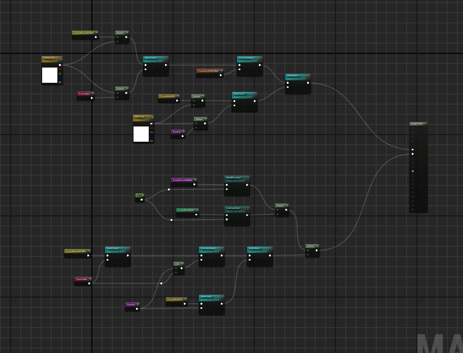
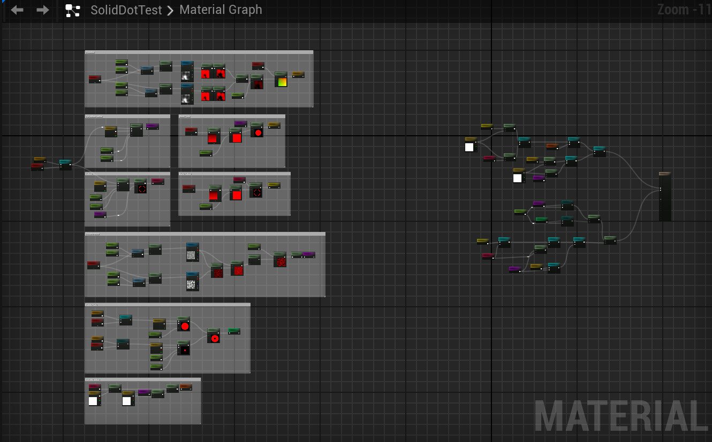

Master Material For Dot Creation
Master modular material for dot creation.
Overview
I noticed that dot-based particles are a common element across different styles and games. So this time, I decided to develop a modular master material that could support multiple visual styles for dot creation.
Technical Features
The material was designed to be highly flexible, allowing artists to quickly adjust, personalise, and test different looks while maintaining a single material. A variety of dot shapes, including simple dots, outlined dots, doughnut-shaped dots, and standalone outlines are supported. Additionally, features such as masks, distortion, and dissolve effects can be enabled and customised to achieve multiple behaviours.
The main goal of this project was to provide artists with creative control while minimising complex set-ups. All properties can be adjusted through exposed parameters, and the material can even be adapted so parameters are controlled dynamically inside of Niagara.
Learnings
One of the biggest challenges of this project was successfully combining multiple masks, colour channels, and opacity calculations into a single material. Working around these aspects helped me better understand blending modes, channel packing, and how transparency behaves inside Unreal.
Another important aspect was maintaining a clean and scalable material graph. I wanted the tool to adapt to as many effects as possible and remain open to future behaviour additions. I focused on designing it to be easily understandable by artists and programmers alike, by clearly dividing the graph into sections, exposing only relevant parameters, and documenting the used nodes.


This master material allowed me to practice not only shader development, but also creation of production-friendly tools that prioritise usability, maintainability, and optimization techniques. I was able to create a master material that can be used across a range of effects, allowing artists to reduce setup and iteration time, as well as improving the overall optimization of the project.